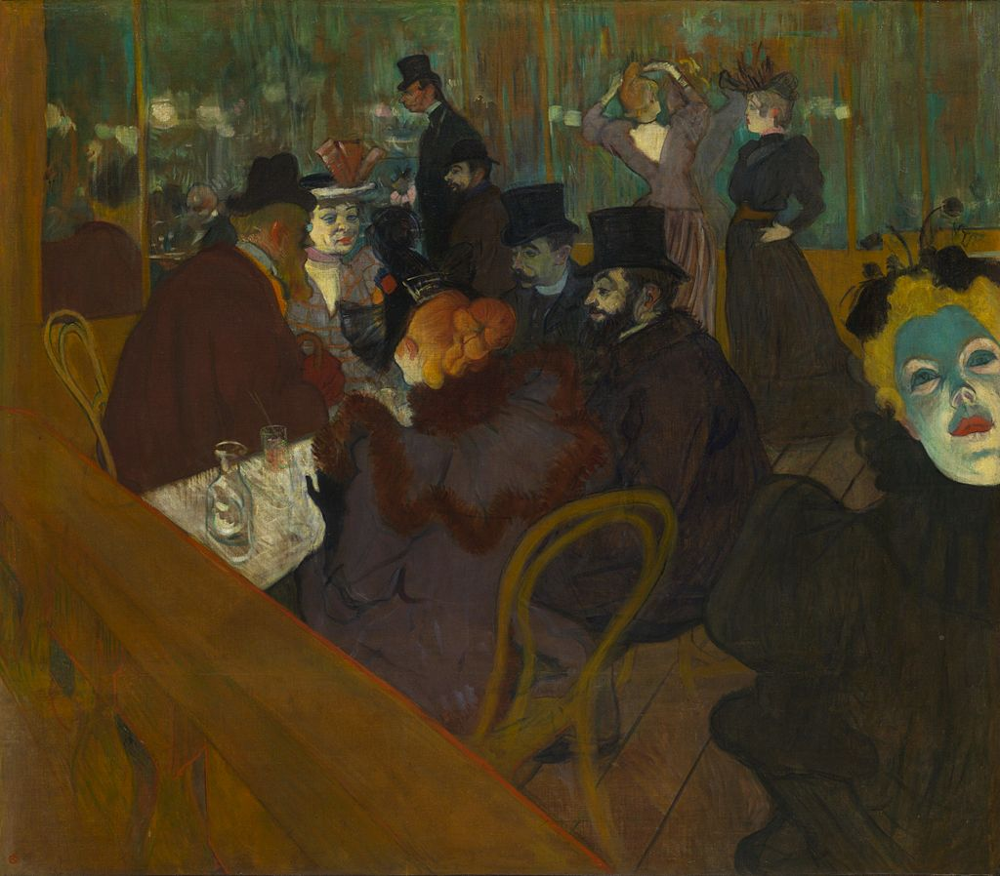

<head>
<meta charset="UTF-8" />
<meta name="keywords" content="drawing, painting" />
<meta name="description" content="drawings by Sunjy" />
<title>Sunjy</title>
<link rel="shortcut icon" type="image/x-icon" href="../../mImages/mCommon/favicon.ico" media="screen" />
<link rel="stylesheet" type="text/css" href="../../mCsses/mCommon/mCssA.css" />
<link rel="stylesheet" type="text/css" href="../../mCsses/mCommon/mCssB.css" />
<link rel="stylesheet" type="text/css" href="../../mCsses/mCommon/mCssC.css" />
<link rel="stylesheet" type="text/css" href="../../mCsses/mCommon/mCssD.css" />
<link rel="stylesheet" type="text/css" href="../../mCsses/mContent/mCssA.css" />
<link rel="stylesheet" type="text/css" href="../../mCsses/mContent/mCssB.css" />
<link rel="stylesheet" type="text/css" href="../../mCsses/mContent/mCssC.css" />
<link rel="stylesheet" type="text/css" href="../../mCsses/mContent/mCssD.css" />
</head>
<script type="text/javascript" src="../../mScripts/mContent/mContentAA.js" /></script>
<script type="text/javascript" src="../../mScripts/mContent/mContentAB.js" /></script>
<script type="text/javascript" src="../../mScripts/mContent/mContentAC.js" /></script>
<script type="text/javascript" src="../../mScripts/mContent/mContentAD.js" /></script>
<script type="text/javascript"></script> 
<script type="text/javascript">
document.write('<div class="mImgAbsolute"></div>');
/*
document.write('<p class="mFontSizeBColor" />From a white paper...</p>');
document.write('<table class="center"><tr><td>');
document.write('');
document.write('</td></tr></table>');
*/
</script>


<script type="text/javascript">
document.write('<p class="mFontSizeBColor" />At the Moulin Rouge</p>');
document.write('<p class="mFontSizeSColor" />“At the Moulin Rouge” by Henri de Toulouse-Lautrec is one of several works by Toulouse-Lautrec depicting the Moulin Rouge cabaret built in Paris in 1889. This painting portrays a group of three men and two women sitting around a table situated on the floor of the nightclub. In the background of this group is a self-portrait of Toulouse-Lautrec himself, who can be identified as the shorter stunted figure next to his taller companion.<br><br>In the right foreground, sitting at a different table is the profile of a dancer, with her face lit in a distinctive light. In the background on the right are a Moulin Rouge dancer and another woman. All the people whose faces are visible have been identified as regular patrons of the Moulin Rouge and acquaintances of the Toulouse-Lautrec.<br><br>Toulouse-Lautrec memorialized Parisian nightlife at the end of the nineteenth century with multiple paintings, and the Moulin Rouge, which was a cabaret in Paris, France, was one of his favorites.<br></p>');
document.write('<table class="center" /><tr><td>');
document.write('<br>In the right foreground, sitting at a different table is the profile of a dancer, with her face lit in a distinctive light. In the background on the right are a Moulin Rouge dancer and another woman. All the people whose faces are visible have been identified as regular patrons of the Moulin Rouge and acquaintances of the Toulouse-Lautrec.<br><br>Toulouse-Lautrec memorialized Parisian nightlife at the end of the nineteenth century with multiple paintings, and the Moulin Rouge, which was a cabaret in Paris, France, was one of his favorites.<br>" />');
document.write('</td></tr></table>');
</script>


